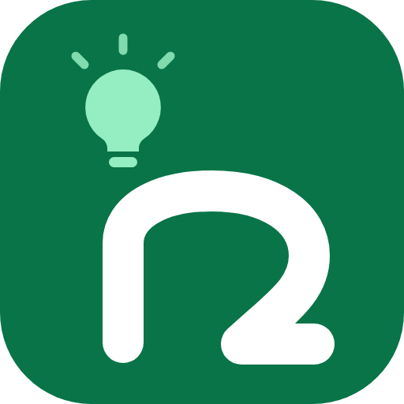

Ecoflash
Developing indoor crop-drying technology that combines biomass heat and solar-assisted heating to help smallholder farmers dry crops more reliably and reduce weather-related losses.
Explore Ecoflash ↗CIVIL ENGINEER / CLIMATE TECH INNOVATOR / FOUNDER
Engineering ideas into practical solutions for a more resilient future.
I work at the intersection of engineering, climate action and entrepreneurship, building solutions and initiatives that respond to real challenges across Africa.
I believe the most meaningful innovations begin with a clear understanding of the people, places and systems they are designed to serve.
My work combines civil engineering, climate technology and social entrepreneurship. I turn ideas into practical initiatives through technical thinking, collaboration and a commitment to learning from the communities closest to the challenges.
Read my story ↗Building solutions and platforms that connect technology, livelihoods and opportunity.
Developing indoor crop-drying technology that combines biomass heat and solar-assisted heating to help smallholder farmers dry crops more reliably and reduce weather-related losses.
Explore Ecoflash ↗
A youth-led organisation focused on climate action, research and technology empowerment, connecting young people with platforms to develop solutions to real-world challenges.
Explore Innovate2day ↗A multidisciplinary foundation shaped by engineering practice, innovation and enterprise development.
Explore the projects, experiments and practical questions shaping my work in engineering and climate innovation.
Explore projects ↗Selected fellowships, innovation challenges and milestones from my journey.
Youth Business Innovation Challenge, First Runner-Up.
NASA Space Apps Challenge, Lira, Local Lead.
Efficiency for Energy Access Design Challenge Accelerator; overall winner and Certificate of Distinction.
Jim Leech Mastercard Foundation Fellowship; graduated as a Fellow.
NASA Space Apps Challenge, Kampala local event; winning team.
For partnerships, engineering conversations, climate innovation and opportunities worth exploring.
Get in touch ↗